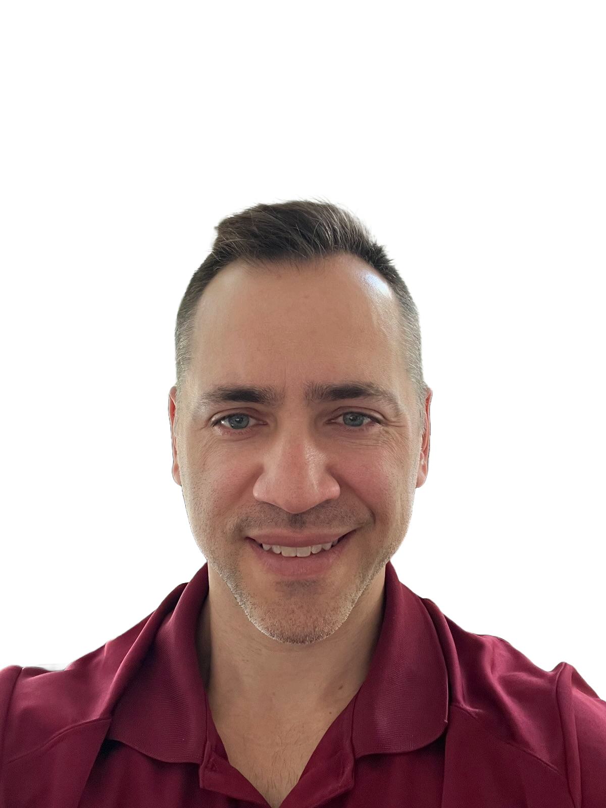

Predictive Safety Assurance for Critical Tailings Infrastructure
Stellatus transforms tailings dam management from reactive inspections to predictive safety assurance. We prevent catastrophic failures before they happen—protecting communities, ecosystems, and your operations while ensuring continuous regulatory compliance and ESG leadership.
Our Mission
At Stellatus, we are revolutionizing tailings dam safety by transforming reactive inspection protocols into predictive failure prevention. Our mission addresses one of mining's most critical risks: tailings dam failures that have caused over $100 billion in environmental damage and countless lives lost globally. Traditional inspection methods—quarterly visual assessments and annual geotechnical surveys—cannot detect the subtle structural changes that precede catastrophic failures.
We deliver predictive intelligence through an integrated autonomous system that overcomes the critical limitations of current monitoring approaches. While traditional methods rely on fragmented data and reactive thresholds, our platform combines continuous surface and subsurface monitoring with AI-powered analytics to detect the complex patterns that precede failures. This enables mining operators to prevent catastrophic events before they occur, ensuring continuous GISTM compliance while transforming your highest-risk assets into predictably safe infrastructure that protects communities, ecosystems, and operations.
The Critical Challenge
Tailings dams represent one of the highest-risk infrastructure assets in the world, yet current monitoring relies on outdated methods that fail to detect problems until it's too late. Recent disasters like Brumadinho and Fundão have demonstrated the catastrophic consequences—hundreds of lives lost, entire ecosystems destroyed, and billions in cleanup costs.
Why We're Uniquely Positioned to Solve This:
Current monitoring approaches are fundamentally flawed—fragmented data silos, infrequent measurements, and reactive threshold-based alerts that miss the complex patterns preceding failures. Our integrated autonomous system eliminates these critical gaps by providing continuous, volumetric monitoring that combines surface and subsurface intelligence into a unified predictive platform. While traditional methods offer point-in-time snapshots, our AI-powered system detects the subtle, multi-parameter patterns that precede catastrophic failures—enabling prevention rather than reaction. This transforms your operations from managing risk to eliminating it.
Beyond Traditional Monitoring Limitations
Today's monitoring approaches create dangerous blind spots. Manual inspections occur weekly or monthly—far too slow for rapid-onset failures. Traditional sensors provide only point measurements, missing spatially distributed problems. Remote sensing like InSAR and LiDAR offer periodic snapshots but lack the continuous monitoring needed for dynamic processes.
Most critically: Current systems exist in fragmented data silos—piezometers, visual inspections, and drone surveys never communicate. This prevents the integrated understanding needed to detect the complex, multi-parameter patterns that precede catastrophic failures.
Our autonomous system solves these fundamental flaws by delivering continuous, volumetric monitoring with integrated AI analytics. Instead of reactive threshold alerts on individual parameters, we detect the subtle correlations across multiple data streams that signal impending failure. This transforms monitoring from descriptive reporting to predictive intelligence—enabling you to prevent failures rather than react to them.
Environmental Impact & ESG Leadership
The mining industry is experiencing a fundamental shift as ESG considerations drive investment decisions and regulatory requirements. Venture capital and institutional investors are allocating unprecedented funding to technologies that address environmental risks and enable sustainable resource extraction.
Stellatus directly addresses critical ESG priorities: preventing environmental disasters, protecting local communities, ensuring regulatory compliance, and enabling responsible mining practices. We don't just provide monitoring—we deliver the predictive intelligence and risk mitigation that ESG-focused stakeholders demand. For mining companies, this means access to capital markets increasingly focused on environmental responsibility and demonstrable safety leadership.
With tailings dam monitoring becoming mandatory in many jurisdictions and insurance companies demanding better risk assessment, our solution transforms compliance costs into competitive advantages while protecting the communities and ecosystems that depend on responsible mining practices.
Predictive Safety Pilot Program
6-month predictive monitoring deployment • 24/7 failure prevention intelligence • Early warning alert system
Comprehensive risk assessment: stability monitoring, seepage detection, structural analysis
Safety-as-a-Service model • Predictable risk mitigation subscription
Stellatus Founder
Hi—I'm Mike Ochs, a long-time enterprise-tech operator (most recently at Microsoft, closing mission-critical cloud deals with Cisco and AMD) who has pivoted from tech quotas to environmental protection. I've spent the past year deep in predictive analytics and mining safety—applying the same performance discipline that kept Fortune 100 networks running—to transform reactive tailings dam management into predictive failure prevention.
My unique combination of enterprise software expertise and deep understanding of mission-critical infrastructure positions me to tackle one of mining's most dangerous problems: tailings dam failures. I work with a specialized team of geotechnical engineers, data scientists, and mining safety experts (because dam failures cost lives and ecosystems) while bringing the enterprise-grade reliability mindset essential for protecting communities and the environment. If the promise of "predictive failure prevention for tailings dam safety" resonates, please reach out. I'm building Stellatus for mining operators and ESG-focused investors who measure success in proactive risk mitigation, community safety, and sustainable operations.
